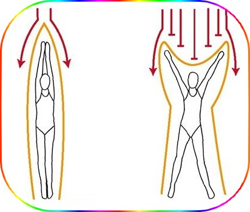

تمرین های وضیعت بدن قورباغه
Breaststroke Body Position Drills
از آنجا که کشیده شدن(درگ) بخشی ذاتی از حرکت قورباغه است ، دستیابی به وضعیت بدن عالی در به حداکثر رساندن حرکت استروک به جلو ضروری است. مانند آزاد و کرال پشت ، هسته مرکزی قدرت است ، اما در قورباغه ، هیچ رول کنار هم وجود ندارد ، در عوض ، یک حرکت نوک زدن یا تاب خوردن وجود دارد. دستیابی به حرکت تابشی موثر به شناگر نیاز دارد که وضعیت ران را ثابت نگه دارد ، در حالی که سر و پاها بین قسمتهای انتهایی شناور به عقب و جلو می روند. هدف از تمرین های زیر برای وضعیت بدن قورباغه ، یادگیری استفاده از تنش اصلی برای دستیابی به بهترین روش شناور است ، در حالی که به حداقل می رساند و بهره وری از لغزش را به حداکثر می رساند.
خط صاف
Streamline
-
اهداف این تمرین
- درگ حذف می شود
- دستیابی به یک موقعیت سرخوردن سودمند
- احساس تنش و ثبات موثر عضلات مرکزی 
-
چطور تمرین را انجام دهیم
- پاها را کاملاً روی دیوار قرار داده و از قسمت جلویی خود بی حرکت و پاها را از هم باز کرده و بازوها را باز کنید اما دستانتان را تقریباً سی و شش اینچ از هم دور کنید. باید مانند X شناور باشید. با صورت در آب ، به جلو نگاه کنید. شناور باشید تا متوقف شوید. به مسافتی که طی کرده اید توجه کنید.
- دوباره دیوار را در همان موقعیت X فشار دهید ، این بار را بگذارید ، چانه را پایین آورده و به پایین استخر نگاه کنید. شناور باشید تا متوقف شوید. توجه داشته باشید که مسافتی که طی کرده اید دورتر است. به سادگی با از بین بردن مقاومت پیشانی در حالت رو به جلو ، در آب کمتری برخورد می کنید و بهتر به جلو می روید.
- اکنون دیوار را فشار دهید ، در حالی که پاهای خود را از هم جدا کرده اید ، به پایین استخر نگاه کنید و این بار یک دست خود را روی دست دیگر قرار دهید و آرنج خود را صاف کنید ، بنابراین گوش های خود را بین بازوهای خود فشار می دهید. بازوهای شما باید مانند پیکان به سمت جلو باشد. شناور باشید تا متوقف شوید. توجه داشته باشید مسافتی که طی کرده اید حتی دورتر است. با باریک شدن لبه جلوی خود ، آب کمتری برخورد می کنید و بهتر به جلو می روید.
- حالا دیوار را فشار دهید ، به پایین استخر نگاه کنید ، یک دست خود را با آرنج صاف روی دست دیگر بگیرید ، گوش های خود را بین بازوهای خود فشار دهید. این بار پاها را برای فشار دادن نزدیک کنید ، سپس وقتی دیوار را ترک کردید ، آنها را از ران تا مچ پا نگه دارید شناور باشید تا متوقف شوید. توجه داشته باشید مسافتی که طی کرده اید بسیار دورتر است. با کاهش فضای کل اشغال شده ، به آب کمتری برخورد می کنید و بهتر به جلو می روید.
- اکنون دیوار را فشار دهید ، به پایین استخر نگاه کنید ، یک دست خود را روی آرنج های راست قرار دهید ، گوش های خود را بین بازوها ، پاها به هم ، ران تا مچ پا فشار دهید. هسته خود را درگیر کنید ، به طوری که ستون فقرات صاف شود. دکمه شکم خود را به سمت عقب بکشید. شناور باشید تا متوقف شوید. توجه داشته باشید که مسافتی که طی کرده اید هنوز دورتر است. با ایجاد یک خط مستقیم محکم با بدن خود ، کمترین آب ممکن را می گیرید و به ساده ترین شکل در میان آب حرکت می کنید. این حالت سر خوردن یا موقعیت پایه برای قورباغه است.
تمرین تاب خوردن
Rocking Drill
-
اهداف این تمرین
- استفاده از حرکت تاب دهنده برای قورباغه
- توسعه عمل عضلات مرکزی واحد
- درک هدف از تاب دادن

-
چطور تمرین را انجام دهیم
- در آب به صورت رو به پایین شناور شوید و بازوها را در کنار خود قرار دهید. هسته خود را درگیر کرده و ستون فقرات خود را صاف کنید. با فشار دادن قفسه سینه به پایین آب در حدود سه اینچ ، به حالت شناور در سراشیبی برسید. توجه داشته باشید که پاهای شما بالاتر شناور می شوند. این شبیه وضعیت بدن در مرحله سر خوردن قورباغه است. این یکی از بالا ترین اقدامات تاب دهنده استروک است. پنج ثانیه در این حالت بمانید.
- اکنون ، وقتی پاشنه ها را به سمت باسن خود عقب می کشید و از زانو خم می شوید ، فشار سینه را آزاد کنید. پاها را زیر آب نگه دارید. تغییر موقعیت شناور خود را احساس کنید. توجه داشته باشید که بدون بالا آوردن چانه ، سر شما بالا می رود. زانوها باید پایین ترین نقطه شناور شما باشد. این حالت موقعی است که به دم و مرحله قدرت ضربه نزدیک می شوید. این حالت دیگر حرکات تاب دهنده شنا سینه است. پنج ثانیه در این حالت بمانید.
- بعد ، آن را با حرکت رو به جلو امتحان کنید. دیوار را با قدرت فشار دهید ، رو به پایین ، بازوها در کنار خود ، هسته درگیر ، ستون فقرات صاف باشید. با فشار دادن قفسه سینه به پایین حدود سه اینچ ، بلافاصله به حالت سر خوردن دست پیدا کنید. در حالی که هنوز به جلو حرکت می کنید ، با آزاد کردن قفسه سینه و کشیدن پاشنه های عقب ، به وضعیت تنفس بروید. توجه کنید که حرکت رو به جلو شما بلافاصله کند می شود.
- دوباره ، دیوار را فشار داده و قفسه سینه خود را حدود سه اینچ پایین فشار دهید. سپس به وضعیت تنفس تغییر وضعیت دهید ، اما این بار سریع دوباره تغییر وضعیت دهید ، بنابراین در حال فشار دادن قفسه سینه به پایین آب هستید ، پاها صاف هستند و موقعیت سر خوردن خود را بازیابی می کنید. توجه داشته باشید که چگونه می توانید با بازگشت سریع به حالت سر خوردن سود ، بر اثر کند شدن وضعیت تنفس غلبه کنید. دوباره امتحان کن. در حالی که هنوز به جلو حرکت می کنید ، به مدت چند ثانیه به طور مداوم قفسه سینه شناور به سمت پایین و سینه به سمت بالا قرار دهید.
- اکنون ، دیوار را با صورت پایین ، بازوها در پهلو ، هسته درگیر شده و مستقیم ستون فقرات را فشار دهید. حرکت تکان دهنده سینه را شروع کنید ، دو برابر بیشتر از زمان تنفس ، در حالت سر خوردن وقت بگذارید. چندین بار تمرین کنید. توجه داشته باشید که با بازگشت سریعتر به حالت سر خوردن ، می توانید حرکت رو به جلو خود را خیلی بیشتر ادامه دهید